SystemVerilog Cheatsheet
Table of Contents
- 1. Compile/Run Verilog Cheatsheet
- 2. Modules
- 3. Data Types and Values
- 4. Operations and Conditions
- 5. Synchronous logic and assignments (alwaysff)
- 6. Finite State Machines
- 7. Testbench
1. Compile/Run Verilog Cheatsheet
1.1. TL;DR
cdto foldervlib workon first runvlog <filename>.svto compile all relevant .sv filesvsim <testbench-name>to run your file (usually a testbench)add wave sim:/<testbench-name>/uut/*- Run your simulation using either:
run <N>to run for <N> nanosecondsrun -allto automatically stop testbench when completed
vlogto recompile relevant modules as needed usingrestart -fto restart your simulation
To run .tcl scripts, use source <script-name>.tcl.
1.2. Detailed Explanation:
- Navigate to your project directory using
cd. The path should:- Use these slashes: ’/’
- Use English characters
- Not have any spaces (alternatively, it use quotes “”)
- Create a ’work’ library using the command
vlib work.- This is supposedly mandatory.
- Only needs to be performed while running your project for the first time.
- Compile your .sv files using
vlog- If some files depend on modules from other files, You will have to compile these files first.
- When running testbench, recompile relevant modules as needed using
vlog- You only need to recompile the relevant modules.
- No need to recompile the testbench itself or any other modules.
2. Modules
2.1. Defining a module
- Everything you write in SystemVerilog must be inside a module.
A module is a fundemental building block that receives inputs and generates outputs.
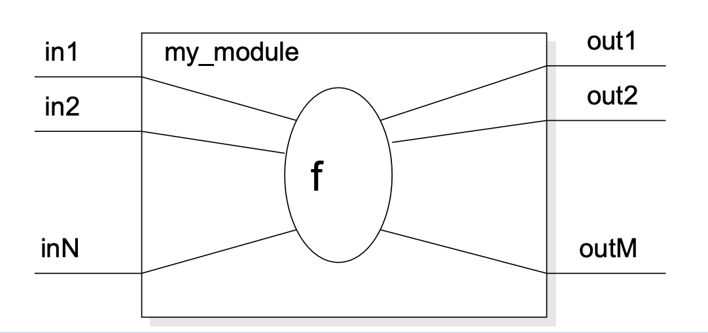
Here’s an example module:
// [a,b] -> [my_module] -> [result = (a AND b)] module my_module( // Input and Output Declaration input logic a, input logic b, output logic result); // Declarations of "f" assign result = a & b; endmodule
2.2. Creating module instances (instantiation)
2.2.1. Positional association
Define an instance of a module according to its argument positions, as such:
module_name instance_name (
my_input1,
...,
my_inputN,
my_out1,
...,
my_outM
);
2.2.2. Named association
Modules can also be instantiated using its arguments’ names explicitly:
module_name instance_name2 ( .in1(my_input1)), ..., .inN(my_inputN), .out1(my_output1), ..., .outM(my_outputM) )
2.3. Parameters
- Allows to pass parameters to a module per-instantiation.
- Note: different from logic inputs and outputs.
2.3.1. Definition inside a module declaration
module some_module ( input logic in1 output logic out1 ); parameter param1 = 1; // 1 is a default value parameter param1 = 2; parameter param1 = 3; endmodule
2.3.2. Usage when instantiating a module
A module that shifts a number left N times.
module shift_N ( output logic [3:0] out, input logic [3:0] a ); parameter N = 1; always_comb begin out = a << N; end endmodule
Here are some usage examples:
module multiple_shifts ( input logic [3:0] a, output logic [3:0] b, output logic [3:0] c ); // Output a 2 shift result to b shift_N #(.N(2)) shift_2(.a(a), .out(b)); // Output a 3 shift result to c shift_N #(.N(3)) shift_3(.a(a), .out(c)); endmodule
2.3.3. Local Parameters
Store constant values inside a module. These cannot be changed or passed to an instance module.
Here’s an example:
module my_module(...); localparam N = 2'b11; localparam NUM_OF_CYCLES = 10; endmodule
2.4. Modules Inside Modules
2.4.1. Using modules inside other modules
// Mux that takes 2-bit inputs and outputs a 2-bit result module mux2to1_2bit ( output logic [1:0] O, input logic [1:0] A, input logic [1:0] B, input logic S ); // Use instances of existing 1-bit input muxes mux2to1_1bit mux1(.O(O[1]), .S(S), .A(A[1]), .B(B[1])); mux2to0_0bit mux0(.O(O[0]), .S(S), .A(A[0]), .B(B[0])); endmodule
2.4.2. Generating many module instances at once (generate)
You can use the generate command to create many module instances at once:
module mux2to1_32bit ( output logic [31:0] O, // 32-bit output input logic [31:0] A, // 32-bit input A input logic [31:0] B, // 32-bit input B input logic S ); genvar i; generate for (i = 0; i < 32; i++) begin mux2to1 mux_inst(.O(O[i]), .S(S), .A(A[i]), .B(B[i])); end endgenerate endmodule
2.5. Concurrent assignment (השמה של ערכים מקבילים/ברי שינוי) to wires inside modules
Connect a wire to some combinatorical logic or another wire.
2.5.1. Syntax
// A simple assignment from one wire to another module pass_same_value( output logic Z, input logic A ); assign Z = A; endmodule // Assigning some concurring calculation to wire module and_module ( output logic Z, input logic A, input logic B ); assign Z = A & B; endmodule
An explicit value can also be used.
logic signal; assign signal = 1'b0;
2.6. Procedular Blocks (הרצה סדרתית של הצהרות בתוך מודול)
2.6.1. Definition and types
All statements inside a procedural block are executed sequentially.
There are two procedural constructs in Verilog:
initialalways_combWe will only use
initialin simulations (testbenches). For regular modules, we usealways_comb.
2.6.2. alwayscomb
Executes statements in a loop. Used for combinatorical logic implementation.
Here’s a working example:
module and_module( output logic Z, input logic A, input logic B ); always_comb begin Z = A & B; end endmodule
You can use conditional statements inside of a procedural block.
2.6.3. Complete assignments
Note: always_comb should NOT be used for memory elements!
- If a signal is not assigned in a certain flow, a memory element is implicitly created to preserve the previous value.
- Usually, this is a bug.
- Always use complete assignments.
3. Data Types and Values
3.1. SystemVerilog Logic Values
In SystemVerilog, a bit can take the following logical values:
| Logic Value | Meaning |
|---|---|
| 0 | zero / logic low / false / ground |
| 1 | one / logic high / true / power |
| x | not initialized or collision |
| z | unconnected |
3.2. 1-bit wires (logic)
The logic data type represents a wire (1 bit):
logic a,b,c,d,e;
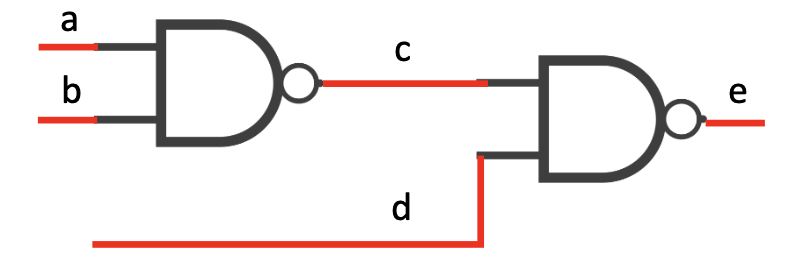
3.3. Vectors
Declaration of an 8-bit logic vector:
logic [7:0] w1; //w1[7] is the MSB
Here’s how you’d describe the “selector” wires in a mux module declaration:
module mux4tol( output logic O, input logic D0, input logic D1, input logic D2, input logic D3, input logic E, input logic [1:0] S ); // declarations // description of a mux endmodule
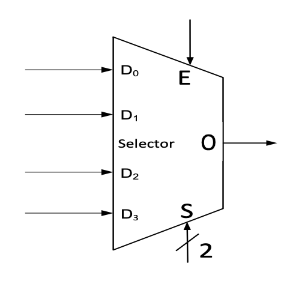
3.3.1. Vector Operations
Bit select:
w1[3]Range select:
w1[3:2]
Pack:
vec = {x, y, z};Unpack:
{carry, sum} = vec[1:0];
3.3.2. Repeated Signals
A signal can be repeated \(n\) times in this manner:
vec = {16{x}} // 16 copies of x
3.3.3. A Working Example (Implementing Unsigned Extension)
logic [7:0] out; logic [3:0] A; out = {{4{1'b0}}, A[3:0]};
3.4. Integer Literals
Format: <width’><signed><radix> value
You can use this format to generate:
- Multiple bit integers (
<signed>) - Two’s complement negative numbers (
<signed>) - Write a number in base 2,8,10 or 16 (
<radix>)
3.4.1. Available number bases (<radix> values)
- Binary (
borB) - Octal (
oorO) - Decimal (
dorD) - Hexadecimal (
gorG)
3.4.2. Default settings
- Width = 32 Unsigned Radix = Decimal
3.4.3. Examples
1'b0- one bit, unsigned, value of zero12'hAD1- 12 bits, unsigned, value of 0xAD112'b1010_1101_0001- 12 bits, unsigned, value of 0xAD114- defaults: 32 bits, unsigned, value of 14-14- 32 bits, signed, value of -14
3.5. Blocking and non-blocking assignment
3.5.1. Blocking assignment
Acts much like in traditional programming languages. The whole statemnt is done before control passes on to the next statement.
In always_comb, we use a blocking assigment:
logic a, in; always_comb begin a = in; end
3.5.2. Non-blocking assignment
Evaluates all the right-hand sides for the current time unit. Assigns the left-hand sides at the end of the procedural block.
Basically, allows behavior of a shift register.
This is how you’d implement a shift behavior between Flip-Flops:
module shifter ( input logic in, input logic clk ); logic A, B, C; always_ff @(posedge clk) begin A <= in; B <= A; C <= B; end endmodule
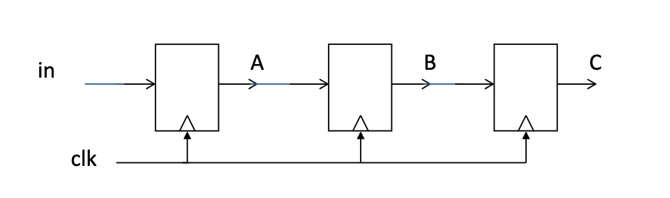
And this is what happens when you accidentally use blocking assignments instead:
module bad_shifter ( input logic in, input logic clk ); logic A, B, C; always_ff @(posedge clk) begin A = in; B = A; C = B; end endmodule
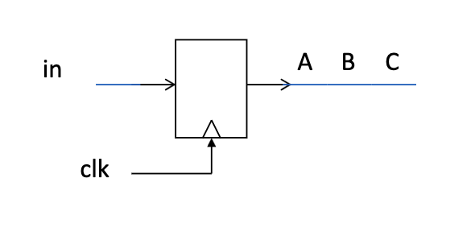
3.6. enum
An enum type defines a set of named values.
We will use enum for FSM state declaration:
typedef enum { idle_st, state1, state2 \} state_type;
4. Operations and Conditions
4.1. Logic Gates (built-in)
The following logic gates are available for direct instantiation:
- and
- or
- not
- xor
- nand
- nor
- xnor
Syntax:
4.1.1. Example implementation of a half hadder
module HalfAdder ( output logic S, output logic C, input logic A, input logic B ); xor(S, A, B); and(C, A, B); endmodule
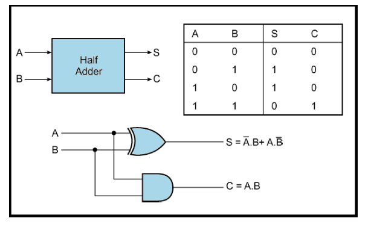
4.2. Operators (built-in)
4.2.1. Bitwise Operators
&- bitwise AND|- bitwise OR~- bitwise NOT^- bitwise XOR~^/^~- bitwise XNOR
4.2.2. Shift
>>- shift right<<- shift left
For example,
b = 4'b1010 << 2; // b = 4'b1000 c = 4'b1010 >> 1; // b = 4'b0101
4.2.3. Operator Precedence
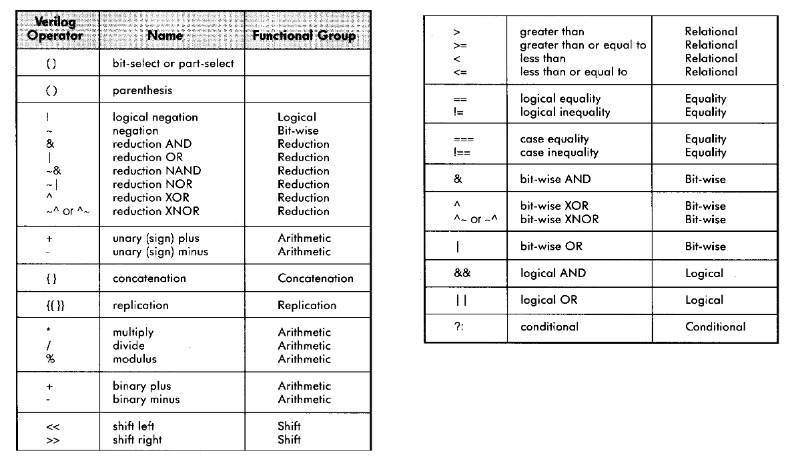
4.3. Logical Operators
4.3.1. Relational Operators
| Operator | Meaning |
|---|---|
| < | Less than |
| <= | Less than or equal to |
| > | Greater than |
| >= | Greater than or equal to |
| \=\= | Equal to |
| !\= | Not equal to |
All of these return a 1-bit logical value (true/false/x)
4.3.2. Logical Operators
Used for conditions.
| Operator | Meaning |
| && | Logical AND |
| || | Logical OR |
| ! | Logical NOT |
- Operands evaluated to a 1-bit value: 0 (false), 1 (true) or x
- Result is a 1-bit value: 0 (false), 1 (true) or x.
4.3.3. Operator Precedence
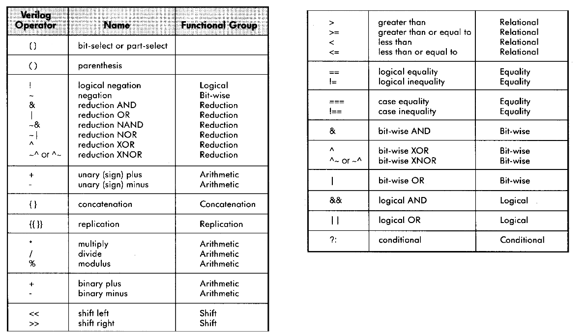
4.4. Conditional Statements
Used in procedural blocks.
4.4.1. if
- Syntax
if (condition1) begin <statement1>; end else if (condition2) begin <statement2>; end else begin <statement3>; <statement4>; end
- A working example
module mux ( input logic A, input logic B, input logic sel, output logic Q ); always_comb begin if (sel == 1'b0) begin Q = A; end else begin Q = B; end end endmodule
4.4.2. case
- Syntax
case (<signal/expression>) <value1>: begin <statement1>; end <value2>: begin <statement2>; end default: begin <statement4>; end endcase
- A working example
An example for mux behavior using
case.module case_example ( input logic A, input logic B, input logic [1:0] w, output logic Y ); always_comb begin case (w) 2'b00: Y = A & B; 2'b01: Y = A | B; 2'b10: Y = A ^ B; default: Y = ~B; endcase end endmodule
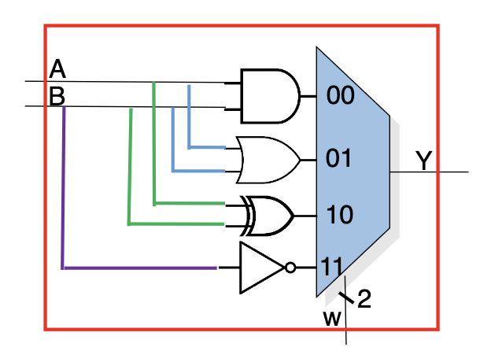
- casez
?andzare considered as don’t cares [0,1,z] - casex
?,xandzare considered as don’t cares [0,1,x,z]
5. Synchronous logic and assignments (alwaysff)
As opposed to always_comb, which implements an asynchronous/combinatorical block,
always_ff implements a synchronous block.
You usually want to use non-blocking assignments with alwaysff.
5.1. Positive Edge (דגימה בעליית שעון)
Using posedge, you can sample a value when your clock is on a positive edge.
This is an example that uses posedge to emulate a Flip-Flop:
logic a, in; always_ff @(posedge clk) begin a <= in; end
5.2. Synchronous Reset
Only occurs on positive edge. This is how you implement it:
always_ff @(posedge clk) begin if (rst == 1'b1) begin <reset statement1>; end else begin <sync statement2>; end end
5.3. Asynchronous Reset
Can occur whenever the reset entrance rises. This is how you implement it:
always_ff @(posedge clk, posedge rst) begin if (rst == 1'b1) begin <reset statement1>; end else begin <sync statement2>; end end
5.4. Implementing a Flip-Flop with Reset
This is how you implement a
6. Finite State Machines
6.1. FSM template
module my_FSM_module ( input logic input1, ... output logic outputN typedef enum {idle_st, start_st\} sm_type; // Declaring signals for the next & current state sm_type current_state; sm_type next_state; // ... );
6.2. Next state recipe for synchronous logic
// FSM synchronous procedural block always_ff @(posedge clk, posedge rst) begin if (rst == 1'b1) begin current_state <= idle_st; end else begin current_state <= next_state; end end
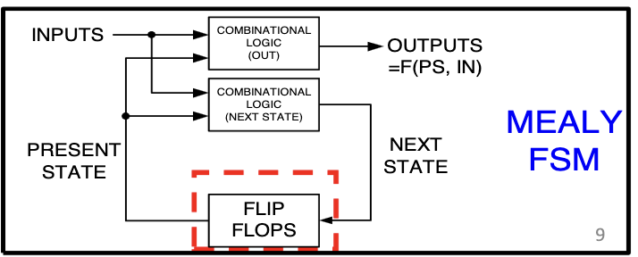
6.3. FSM - (Mealy) Asynchronous Logic
This is how you can use the current state to infer outputs and the next state:
always_comb begin // Default assignments next_state = current_state; output1 = 1'b0; ... outputN = 1'b0 // Specific assignments case (current_state) idle_st: begin next_state = ...; ouput1 = ...; ... outputN = ...; end start_st: begin next_state = ...; output1 = ...; ... outputN = ...; end ... endcase end
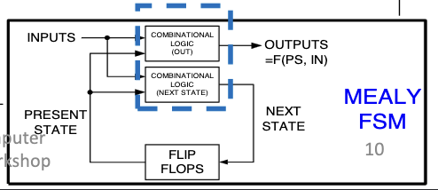
7. Testbench
7.1. Unit Under Test (UUT)
A testbench generates input values and checks our Unit Under Test (UUT) for its response.
The UUT in our case is our module.
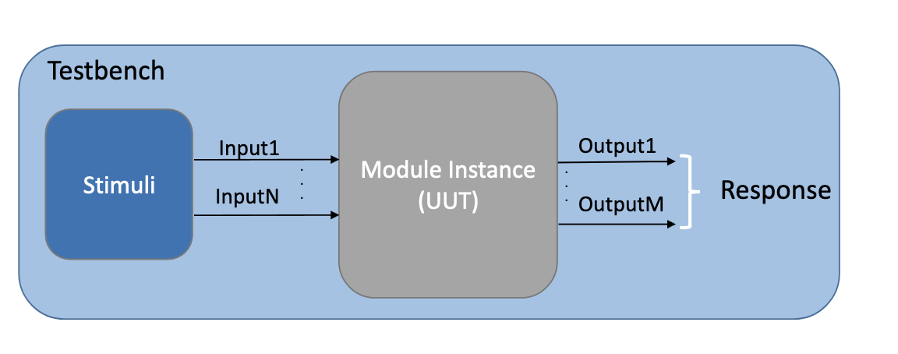
7.2. Repeat Loop
Used in an initial block to repeat statements.
repeat(num_of_times) begin <statement1>; <statement2>; end
7.3. Generating input values
initial begin data = 0; #50 // Wait 50ns data = 1; #30 // Wait 30ns data = 0;
Here’s a working example:
// _tb stands for _testbench module HalfAdder_tb; // Definition of testbench input values to UUT logic ha_a; logic ha_b; logic ha_sum; logic ha_carry; // Instance of UUT HalfAdder uut( .a(ha_a), .b(ha_b), .sum(ha_sum), .carry(ha_carry) ); // Generate test input values here initial_begin ha_a = 0; ha_b = 0; #20 ha_a = 1; ha_b = 0; #20 ha_a = 1; ha_b = 1; end endmodule
7.4. Synchronous logic: Generating a Clock Signal
This is how you generate a clock signal for simulation 2:
// Start value of clock initial begin Clock = 1'b0; end // Clock behavior always begin #10 Clock = ~Clock; end
7.5. Synchronous logic: Wait X clock cycles
Example: Waiting for 4 clock cycles
initial begin repeat(4) begin @(posedge clk); end end
7.6. How to Debug a FSM
- Always add the current and next state to the waveform
- Given the current state and the inputs, check that the next state and output are as expected
- As always, search for
xandzvalues and ensure they make sense